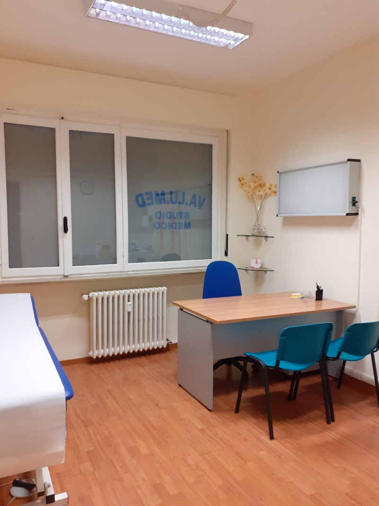
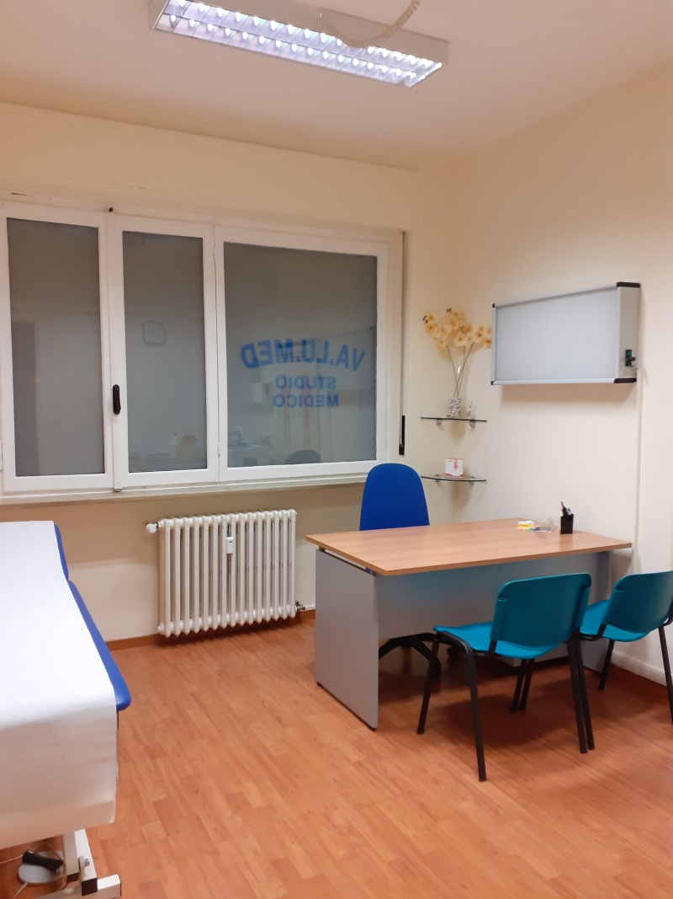

Poliambulatorio Lmedica Lancellotti Lorenzo e Fabrizio Via Mario Montanari, 37 - 48121 Ravenna (RA) Il poliambulatorio all'avanguardia per la diagnosi e la cura delle patologie legate al cavo orale e al distretto testa-collo a Ravenna è Lmedica. Aperto fino alle 14:00
 
